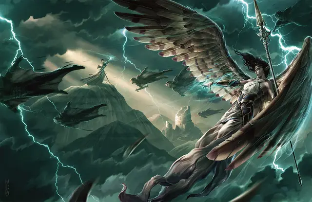

Аериси Калинос
Aerisi Kalinoth
Средний Гуманоид (Эльф), нейтрально-злой, именной НИП

Класс Доспеха 13 (16 с доспехом мага)
Хиты 66 (12к8 + 12)
Скорость 30 футов
| мод | спас | ||
|---|---|---|---|
| СИЛ | 8 | −1 | −1 |
| ЛОВ | 16 | +3 | +3 |
| ТЕЛ | 12 | +1 | +1 |
| мод | спас | ||
|---|---|---|---|
| ИНТ | 17 | +3 | +3 |
| МДР | 10 | +0 | +0 |
| ХАР | 16 | +3 | +3 |
Навыки Восприятие +3, История +6, Магия +6
Сопротивление урону электричество
Чувства тёмное зрение 30 футов, пассивное Восприятие 13
Языки Общий, Ауран, Эльфийский
Опасность 7 (2900 опыта)
Бонус мастерства +3
Особенности
Наследие фей. Аериси совершает с преимуществом спасброски от очарования, и её невозможно магически усыпить.
Посмертный вой. Когда хиты Аериси опускаются до 0, её тело исчезает в завывающем вихре, который вскоре быстро и безвредно рассеивается. Всё, во что она была одета и носила с собой, остаётся лежать на месте.
Легендарное сопротивление (2/день). Если Аериси проваливает спасбросок, она может вместо этого сделать спасбросок успешным.
Использование заклинаний. Аериси является заклинателем 12-го уровня. Её базовой характеристикой является Интеллект (Сл спасброска от заклинаний 14, +6 к атакам заклинаниями). Аериси обладает следующими заготовленными заклинаниями волшебника:
• Заговоры (неограниченно): шквал [gust], волшебная рука [mage hand], сообщение [message], фокусы [prestidigitation], луч холода [ray of frost], электрошок [shocking grasp]
• 1 уровень (4 ячейки): очарование личности [charm person], падение пёрышком [feather fall], доспехи мага [mage armor], волна грома [thunderwave]
• 2 уровень (3 ячейки): пылевой вихрь [dust devil], порыв ветра [gust of wind], невидимость [invisibility]
• 3 уровень (3 ячейки): полёт [fly], газообразная форма [gaseous form], молния [lightning bolt]
• 4 уровень (3 ячейки): град [ice Storm], сфера бури [storm sphere]
• 5 уровень (2 ячейки): облако смерти [cloudkill], притворство [seeming] (использует каждый день)
• 6 уровень (1 ячейка): пляшущая молния [chain lightning]
Действия
Перст Ветра. Рукопашная или дальнобойная атака оружием: +8 к попаданию, досягаемость 5 футов или дистанция 20 футов/60 футов, одна цель. Попадание: 8 (1к6 + 5) колющего урона или 9 (1к8 + 5) колющего урона при использовании оружия двумя руками в рукопашной атаке, плюс 3 (1к6) урона электричеством.
Логово
В узле воздуха. Когда храму Воющей Ненависти угрожает опасность, Аериси отступает в Воющие Пещеры к узлу воздуха. Здесь Аериси получает дополнительное использование её способности «легендарное сопротивление».
Действия логова
Если Аериси находится в узле воздуха, без Ян-Си-Бина, она может использовать действия логова и её показатель опасности увеличивается до 9 (5000 опыта). При значении инициативы «20» (в случае ничьей проигрывает всем конкурентам) она может использовать действие логова, чтобы сотворить одно из своих заклинаний не выше 3-го уровня без использования компонентов и ячеек заклинаний. Она не может использовать одно и то же заклинание два раунда подряд, хотя она может продолжить концентрироваться на заклинании, вызванном действием логова ранее. Аериси не может совершать иных действий логова, если она концентрируется на заклинании, вызванном действием логова.
Если Аериси накладывает заклинание невидимость [invisibility] действием логова, она также вбирает в себя силу узла воздуха, восстанавливая 15 (3к8 + 2) хитов.
Описание
Аериси Калинос — пророк воздуха Древнего Элементального Ока и лидер культа Воющей Ненависти — это высокая, стройная, черноволосая эльфийка, за спиной которой колышутся иллюзорные пернатые крылья, создающие нежное дуновение ветерка. Аериси разговаривает со своими людьми шёпотом, что контрастирует с её вспыльчивой натурой, проявляющейся, когда ей перечат.
Раньше Аериси носила имя Дара Альгвиненн Калинос [Dara Algwynenn Kalinoth]. Она выросла в далёком королевстве фей и с возрастом должна была стать принцессой лунных эльфов. Родители хотели защитить Дару от сурового реального мира и прятали её на родине, но это лишь испортило её. Когда они попытались призвать свою своенравную дочь к порядку, она использовала против них силу элементального воздуха. Вскоре после этого видения привели Дару к древним дварфийским руинам, где её дожидалось копьё Перст Ветра.
Она сменила своё имя на Аериси и притворилась принцессой авариэлей — крылатых эльфов из сказок, которыми она зачитывалась в детстве. Затем Аериси использовала свой талант в магии очарования, чтобы склонить смертных присоединиться к её культу. Она убедила всех своих последователей, что действительно происходит из рода авариэлей, и, кажется, поверила в это сама, хотя ей и приходится каждый день произносить заклинание притворство[seeming], чтобы «явить» свои крылья.
Аериси склонна к бредовым полётам фантазии и импульсивной распущенности. Она видит себя прекрасной, свирепой и справедливой правительницей, которая способна управлять силой стихий, потому что этого заслуживает.